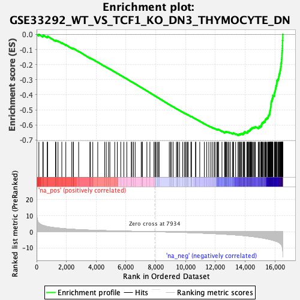
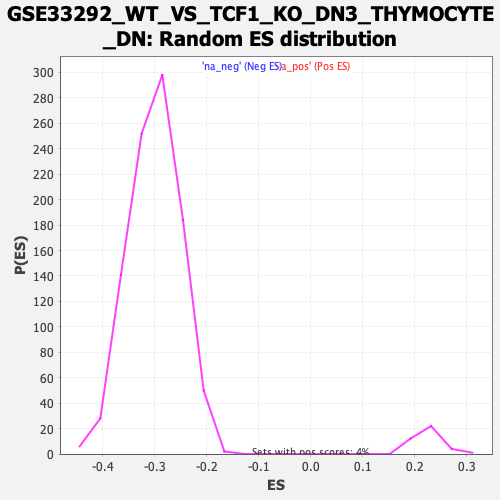

| | | Dataset | DE_genes2 |
| Phenotype | NoPhenotypeAvailable |
| Upregulated in class | na_neg |
| GeneSet | GSE33292_WT_VS_TCF1_KO_DN3_THYMOCYTE_DN |
| Enrichment Score (ES) | -0.66903454 |
| Normalized Enrichment Score (NES) | -2.2332103 |
| Nominal p-value | 0.0 |
| FDR q-value | 0.0 |
| FWER p-Value | 0.0 |
Table: GSEA Results Summary

Fig 1: Enrichment plot: GSE33292_WT_VS_TCF1_KO_DN3_THYMOCYTE_DN
Profile of the Running ES Score & Positions of GeneSet Members on the Rank Ordered List
| PROBE | GENE SYMBOL | GENE_TITLE | RANK IN GENE LIST | RANK METRIC SCORE | RUNNING ES | CORE ENRICHMENT | | 1 | B4GALT2 | | | 153 | 5.434 | -0.0003 | No |
| 2 | NDUFS5 | | | 417 | 3.930 | -0.0098 | No |
| 3 | IGFBP7 | | | 445 | 3.844 | -0.0050 | No |
| 4 | HADH | | | 715 | 3.172 | -0.0162 | No |
| 5 | LGALS3BP | | | 741 | 3.127 | -0.0125 | No |
| 6 | GSTP1 | | | 1268 | 2.394 | -0.0407 | No |
| 7 | HSPB1 | | | 1298 | 2.358 | -0.0385 | No |
| 8 | TRIM14 | | | 1437 | 2.233 | -0.0432 | No |
| 9 | SLC37A4 | | | 1693 | 1.996 | -0.0555 | No |
| 10 | CCL17 | | | 1961 | 1.785 | -0.0688 | No |
| 11 | TUBA4A | | | 2362 | 1.516 | -0.0908 | No |
| 12 | ACAT2 | | | 2466 | 1.460 | -0.0946 | No |
| 13 | PSCA | | | 2468 | 1.459 | -0.0922 | No |
| 14 | LINC00342 | | | 2823 | 1.276 | -0.1118 | No |
| 15 | MPDU1 | | | 3579 | 0.979 | -0.1563 | No |
| 16 | GLDC | | | 3613 | 0.965 | -0.1567 | No |
| 17 | PTPRU | | | 3772 | 0.905 | -0.1649 | No |
| 18 | TRAF3IP2 | | | 4105 | 0.807 | -0.1839 | No |
| 19 | NET1 | | | 4566 | 0.672 | -0.2109 | No |
| 20 | ZNF423 | | | 4674 | 0.643 | -0.2163 | No |
| 21 | LCP1 | | | 4828 | 0.611 | -0.2247 | No |
| 22 | PRPSAP1 | | | 4918 | 0.590 | -0.2291 | No |
| 23 | AKR1B1 | | | 5243 | 0.507 | -0.2481 | No |
| 24 | OAT | | | 5417 | 0.466 | -0.2579 | No |
| 25 | ACOT7 | | | 5649 | 0.416 | -0.2714 | No |
| 26 | BDH1 | | | 5856 | 0.374 | -0.2833 | No |
| 27 | SLC39A8 | | | 6056 | 0.335 | -0.2950 | No |
| 28 | FABP5 | | | 6357 | 0.273 | -0.3129 | No |
| 29 | SORL1 | | | 6401 | 0.263 | -0.3151 | No |
| 30 | RRAGD | | | 6504 | 0.244 | -0.3209 | No |
| 31 | ALDH7A1 | | | 6616 | 0.220 | -0.3273 | No |
| 32 | WWOX | | | 7023 | 0.151 | -0.3519 | No |
| 33 | GALE | | | 7096 | 0.135 | -0.3561 | No |
| 34 | FRMD4B | | | 7098 | 0.135 | -0.3559 | No |
| 35 | AHNAK | | | 7404 | 0.080 | -0.3744 | No |
| 36 | SLC27A2 | | | 7606 | 0.047 | -0.3867 | No |
| 37 | POP7 | | | 7878 | 0.007 | -0.4032 | No |
| 38 | TUBG1 | | | 7955 | -0.003 | -0.4079 | No |
| 39 | EFCAB11 | | | 8010 | -0.014 | -0.4112 | No |
| 40 | TMEM106C | | | 8099 | -0.026 | -0.4165 | No |
| 41 | SLC31A1 | | | 8175 | -0.038 | -0.4210 | No |
| 42 | LDHA | | | 8226 | -0.046 | -0.4240 | No |
| 43 | PFKM | | | 8907 | -0.172 | -0.4653 | No |
| 44 | LY96 | | | 8993 | -0.191 | -0.4702 | No |
| 45 | PRKAR2B | | | 9031 | -0.200 | -0.4721 | No |
| 46 | LAPTM4B | | | 9158 | -0.228 | -0.4795 | No |
| 47 | SLC29A1 | | | 9162 | -0.229 | -0.4793 | No |
| 48 | ETFB | | | 9387 | -0.286 | -0.4925 | No |
| 49 | GSS | | | 9460 | -0.304 | -0.4964 | No |
| 50 | MATK | | | 9480 | -0.308 | -0.4970 | No |
| 51 | KRT4 | | | 9594 | -0.338 | -0.5034 | No |
| 52 | KAT2A | | | 9804 | -0.402 | -0.5155 | No |
| 53 | SIVA1 | | | 9918 | -0.433 | -0.5217 | No |
| 54 | CERS6 | | | 9996 | -0.459 | -0.5256 | No |
| 55 | MT2A | | | 10037 | -0.470 | -0.5273 | No |
| 56 | ABCF2 | | | 10126 | -0.498 | -0.5319 | No |
| 57 | CDK4 | | | 10174 | -0.517 | -0.5339 | No |
| 58 | SPRY2 | | | 10359 | -0.572 | -0.5442 | No |
| 59 | GNAQ | | | 10376 | -0.579 | -0.5442 | No |
| 60 | UNG | | | 10394 | -0.586 | -0.5442 | No |
| 61 | ANXA4 | | | 10666 | -0.682 | -0.5597 | No |
| 62 | SIGMAR1 | | | 10691 | -0.689 | -0.5600 | No |
| 63 | PPIH | | | 10951 | -0.783 | -0.5745 | No |
| 64 | ATIC | | | 11258 | -0.905 | -0.5917 | No |
| 65 | ZNF248 | | | 11420 | -0.978 | -0.6000 | No |
| 66 | SLC7A1 | | | 11560 | -1.031 | -0.6067 | No |
| 67 | CCT5 | | | 11693 | -1.083 | -0.6130 | No |
| 68 | FKBP4 | | | 11802 | -1.134 | -0.6177 | No |
| 69 | AHCY | | | 11917 | -1.185 | -0.6227 | No |
| 70 | TRAP1 | | | 11977 | -1.208 | -0.6243 | No |
| 71 | LIG1 | | | 12096 | -1.272 | -0.6294 | No |
| 72 | RABEPK | | | 12144 | -1.300 | -0.6301 | No |
| 73 | STIL | | | 12207 | -1.330 | -0.6317 | No |
| 74 | COPS3 | | | 12216 | -1.334 | -0.6299 | No |
| 75 | DTYMK | | | 12442 | -1.447 | -0.6413 | No |
| 76 | FANCG | | | 12622 | -1.544 | -0.6496 | No |
| 77 | UMPS | | | 12645 | -1.559 | -0.6484 | No |
| 78 | PRIM2 | | | 12678 | -1.578 | -0.6477 | No |
| 79 | CCNE1 | | | 12690 | -1.585 | -0.6457 | No |
| 80 | AKAP1 | | | 12734 | -1.605 | -0.6457 | No |
| 81 | ADK | | | 12772 | -1.630 | -0.6452 | No |
| 82 | USP14 | | | 12854 | -1.691 | -0.6473 | No |
| 83 | CYP1B1 | | | 12922 | -1.728 | -0.6486 | No |
| 84 | NUDT1 | | | 13014 | -1.779 | -0.6511 | No |
| 85 | PHGDH | | | 13160 | -1.867 | -0.6569 | No |
| 86 | RNASEH2A | | | 13180 | -1.879 | -0.6549 | No |
| 87 | SLC39A14 | | | 13221 | -1.904 | -0.6542 | No |
| 88 | NPM3 | | | 13360 | -2.001 | -0.6593 | No |
| 89 | TIMELESS | | | 13518 | -2.107 | -0.6654 | No |
| 90 | MEST | | | 13579 | -2.149 | -0.6654 | Yes |
| 91 | HSPB11 | | | 13604 | -2.167 | -0.6633 | Yes |
| 92 | NUP155 | | | 13614 | -2.172 | -0.6602 | Yes |
| 93 | RPP40 | | | 13691 | -2.236 | -0.6611 | Yes |
| 94 | RANBP1 | | | 13713 | -2.252 | -0.6586 | Yes |
| 95 | NME1 | | | 13763 | -2.298 | -0.6578 | Yes |
| 96 | CKS1B | | | 13865 | -2.382 | -0.6600 | Yes |
| 97 | TTF2 | | | 13869 | -2.386 | -0.6562 | Yes |
| 98 | GMPS | | | 13895 | -2.413 | -0.6537 | Yes |
| 99 | EXOSC7 | | | 13936 | -2.442 | -0.6520 | Yes |
| 100 | RFC5 | | | 13956 | -2.460 | -0.6491 | Yes |
| 101 | DHFR | | | 13968 | -2.471 | -0.6456 | Yes |
| 102 | IMPDH2 | | | 14112 | -2.608 | -0.6500 | Yes |
| 103 | GART | | | 14168 | -2.658 | -0.6489 | Yes |
| 104 | C1QBP | | | 14175 | -2.666 | -0.6449 | Yes |
| 105 | MTHFD1 | | | 14176 | -2.666 | -0.6404 | Yes |
| 106 | TSR1 | | | 14247 | -2.740 | -0.6401 | Yes |
| 107 | ESPL1 | | | 14262 | -2.749 | -0.6364 | Yes |
| 108 | COQ2 | | | 14324 | -2.802 | -0.6354 | Yes |
| 109 | MTHFD2 | | | 14348 | -2.825 | -0.6321 | Yes |
| 110 | TXN | | | 14349 | -2.826 | -0.6274 | Yes |
| 111 | BCAT1 | | | 14397 | -2.877 | -0.6254 | Yes |
| 112 | DUT | | | 14433 | -2.919 | -0.6227 | Yes |
| 113 | POLE | | | 14456 | -2.944 | -0.6191 | Yes |
| 114 | MPHOSPH6 | | | 14521 | -3.007 | -0.6180 | Yes |
| 115 | CHAF1A | | | 14579 | -3.085 | -0.6163 | Yes |
| 116 | GCLM | | | 14646 | -3.180 | -0.6151 | Yes |
| 117 | ACAT1 | | | 14684 | -3.228 | -0.6119 | Yes |
| 118 | C5orf30 | | | 14877 | -3.472 | -0.6179 | Yes |
| 119 | GCSH | | | 14938 | -3.561 | -0.6156 | Yes |
| 120 | CSE1L | | | 14944 | -3.568 | -0.6099 | Yes |
| 121 | PLK4 | | | 15029 | -3.687 | -0.6089 | Yes |
| 122 | PSMG1 | | | 15080 | -3.764 | -0.6057 | Yes |
| 123 | CKS2 | | | 15086 | -3.767 | -0.5997 | Yes |
| 124 | ZWINT | | | 15107 | -3.798 | -0.5945 | Yes |
| 125 | HPRT1 | | | 15127 | -3.819 | -0.5893 | Yes |
| 126 | TFDP1 | | | 15156 | -3.856 | -0.5846 | Yes |
| 127 | POLA1 | | | 15213 | -3.936 | -0.5814 | Yes |
| 128 | MDFIC | | | 15267 | -4.054 | -0.5779 | Yes |
| 129 | SPAG5 | | | 15339 | -4.181 | -0.5752 | Yes |
| 130 | TK1 | | | 15344 | -4.187 | -0.5685 | Yes |
| 131 | GGH | | | 15362 | -4.223 | -0.5625 | Yes |
| 132 | POLE2 | | | 15406 | -4.310 | -0.5579 | Yes |
| 133 | NEDD4 | | | 15462 | -4.418 | -0.5539 | Yes |
| 134 | TRIP13 | | | 15527 | -4.544 | -0.5502 | Yes |
| 135 | CIT | | | 15547 | -4.578 | -0.5437 | Yes |
| 136 | GINS1 | | | 15564 | -4.619 | -0.5370 | Yes |
| 137 | NEMP1 | | | 15605 | -4.735 | -0.5315 | Yes |
| 138 | CCNB1 | | | 15643 | -4.796 | -0.5257 | Yes |
| 139 | CDC25C | | | 15648 | -4.802 | -0.5179 | Yes |
| 140 | OIP5 | | | 15659 | -4.836 | -0.5105 | Yes |
| 141 | KNTC1 | | | 15665 | -4.846 | -0.5027 | Yes |
| 142 | UBE2C | | | 15704 | -4.913 | -0.4968 | Yes |
| 143 | WDR43 | | | 15705 | -4.913 | -0.4886 | Yes |
| 144 | FOXM1 | | | 15710 | -4.931 | -0.4806 | Yes |
| 145 | BLM | | | 15728 | -4.957 | -0.4733 | Yes |
| 146 | SACS | | | 15729 | -4.959 | -0.4650 | Yes |
| 147 | BAG2 | | | 15742 | -4.998 | -0.4574 | Yes |
| 148 | TOB1 | | | 15748 | -5.007 | -0.4493 | Yes |
| 149 | CTNNAL1 | | | 15758 | -5.029 | -0.4415 | Yes |
| 150 | RFC4 | | | 15807 | -5.149 | -0.4358 | Yes |
| 151 | CDK1 | | | 15810 | -5.156 | -0.4273 | Yes |
| 152 | NCAPH | | | 15843 | -5.247 | -0.4205 | Yes |
| 153 | PRIM1 | | | 15856 | -5.276 | -0.4124 | Yes |
| 154 | TPX2 | | | 15859 | -5.288 | -0.4037 | Yes |
| 155 | CHEK1 | | | 15965 | -5.552 | -0.4008 | Yes |
| 156 | PAICS | | | 15966 | -5.553 | -0.3915 | Yes |
| 157 | HLTF | | | 15978 | -5.593 | -0.3829 | Yes |
| 158 | DBF4 | | | 16002 | -5.664 | -0.3748 | Yes |
| 159 | GTSE1 | | | 16026 | -5.744 | -0.3666 | Yes |
| 160 | DCLRE1A | | | 16034 | -5.780 | -0.3574 | Yes |
| 161 | KIF2C | | | 16061 | -5.848 | -0.3492 | Yes |
| 162 | ADCY3 | | | 16069 | -5.870 | -0.3398 | Yes |
| 163 | CCNE2 | | | 16115 | -5.986 | -0.3325 | Yes |
| 164 | CDC7 | | | 16121 | -6.016 | -0.3228 | Yes |
| 165 | MELK | | | 16129 | -6.045 | -0.3131 | Yes |
| 166 | BUB1 | | | 16142 | -6.084 | -0.3037 | Yes |
| 167 | GPSM2 | | | 16202 | -6.325 | -0.2967 | Yes |
| 168 | GCLC | | | 16243 | -6.517 | -0.2882 | Yes |
| 169 | PKMYT1 | | | 16257 | -6.586 | -0.2780 | Yes |
| 170 | CDC45 | | | 16272 | -6.693 | -0.2677 | Yes |
| 171 | TAF1B | | | 16304 | -6.878 | -0.2581 | Yes |
| 172 | BUB1B | | | 16335 | -7.102 | -0.2481 | Yes |
| 173 | KIF23 | | | 16347 | -7.203 | -0.2367 | Yes |
| 174 | CDC6 | | | 16375 | -7.439 | -0.2259 | Yes |
| 175 | EXO1 | | | 16387 | -7.570 | -0.2139 | Yes |
| 176 | ANP32E | | | 16405 | -7.799 | -0.2019 | Yes |
| 177 | KIF11 | | | 16409 | -7.860 | -0.1890 | Yes |
| 178 | CENPA | | | 16438 | -8.139 | -0.1771 | Yes |
| 179 | TTK | | | 16444 | -8.189 | -0.1637 | Yes |
| 180 | CDKN3 | | | 16463 | -8.532 | -0.1505 | Yes |
| 181 | ARHGAP11A | | | 16467 | -8.620 | -0.1363 | Yes |
| 182 | KIF20B | | | 16472 | -8.749 | -0.1219 | Yes |
| 183 | DLGAP5 | | | 16482 | -9.145 | -0.1071 | Yes |
| 184 | TOP2A | | | 16497 | -9.873 | -0.0915 | Yes |
| 185 | CENPE | | | 16501 | -10.010 | -0.0749 | Yes |
| 186 | SKP2 | | | 16506 | -10.608 | -0.0574 | Yes |
| 187 | CENPF | | | 16507 | -10.688 | -0.0396 | Yes |
| 188 | NDC80 | | | 16527 | -12.233 | -0.0203 | Yes |
| 189 | HMMR | | | 16528 | -12.240 | 0.0002 | Yes |
Table: GSEA details [plain text format]

Fig 2: GSE33292_WT_VS_TCF1_KO_DN3_THYMOCYTE_DN: Random ES distribution
Gene set null distribution of ES for GSE33292_WT_VS_TCF1_KO_DN3_THYMOCYTE_DN